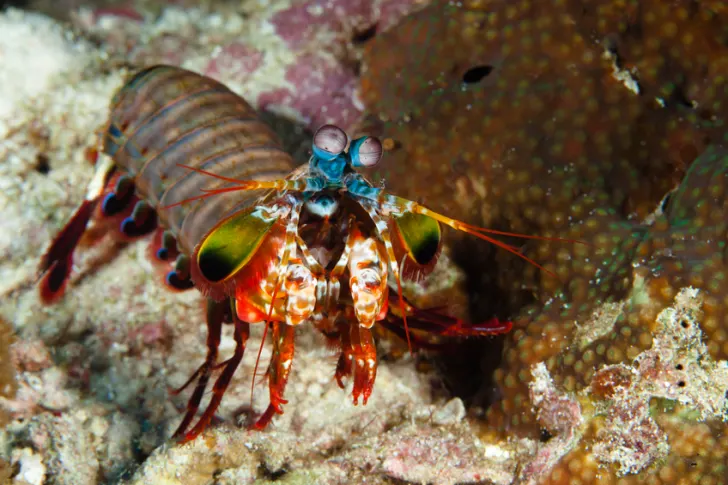
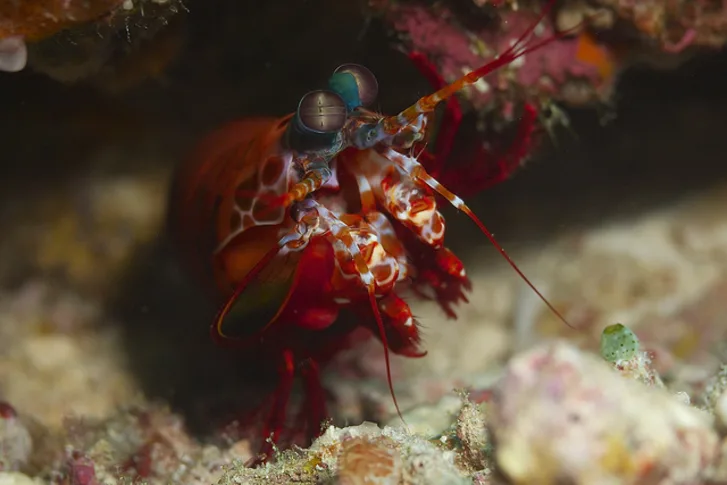
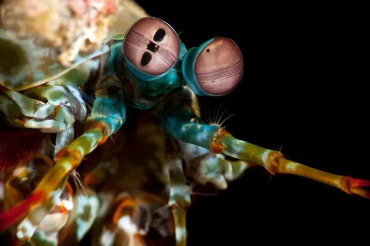

Eles não são camarões
Apesar de terem o mesmo nome e estatura, os camarões mantis não
são camarões. São estomatópodes, parentes distantes de
caranguejos, camarões e lagostas.

Soco poderoso
O camarão mantis Stomatopoda usa dois apêndices chamados clavas de
dáctilo para esmurrar suas presas. Seus "punhos" saltam de seus
corpos a 80 km/h, acelerando mais rápido do que uma bala calibre
.22. Quando atingem seu alvo, eles aplicam 160 libras de força,
quebrando as conchas como uma marreta de caranguejo ultrarrápida.

Visão
Cada olho contém 12 fotorreceptores que permitem detectar
diferentes tipos de cores. Para efeito de comparação, os olhos
humanos normalmente contêm três tipos de células sensíveis à luz
para ver o vermelho, o azul e o verde. Isso levou alguns a
concluir que o camarão mantis percebe o mundo em um arco-íris
psicodélico de cores vibrantes. Suas habilidades ópticas estão em
um nível completamente separado do nosso, funcionando mais como um
satélite do que qualquer coisa encontrada na natureza.
